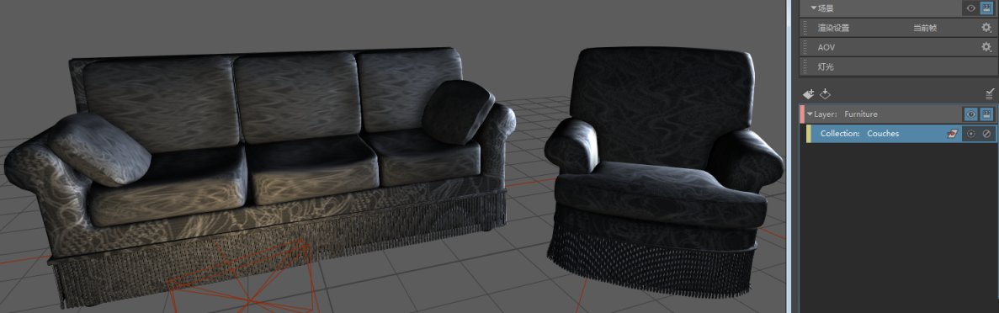
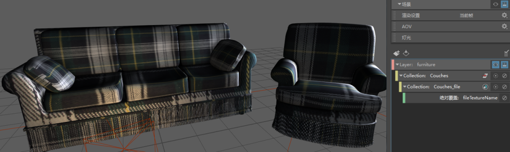

通过右键单击文件节点上的“图像名称”(Image Name)属性以创建覆盖，可将对象映射到渲染层中的不同纹理。
如果要将每个层上的不同纹理应用于一组对象，此功能极为有用。
在此示例中，已将沙发指定 lambert，后者将映射到灰色纹理。若要将沙发指定为格子纹理，则可执行以下操作：
- 将“家具”(Furniture)层设置为可见，然后选择“沙发”(Couches)集合，再选择灰色纹理文件节点。

- 在文件节点的“属性编辑器”(Attribute Editor)中，在“图像名称”(Image Name)属性的文件路径区域上单击鼠标右键，然后选择“为可见层创建绝对覆盖”(Create Absolute Override for Visible Layer)。
系统将创建文件节点子集合以及相应的文件纹理名称覆盖。
- 选择该覆盖。在“特性编辑器”(Property Editor)中，单击文件夹图标以连接到新纹理。
启用或禁用文件节点覆盖，以便在两个纹理之间进行切换。

注： 纹理由 www.cgtextures.com 提供。